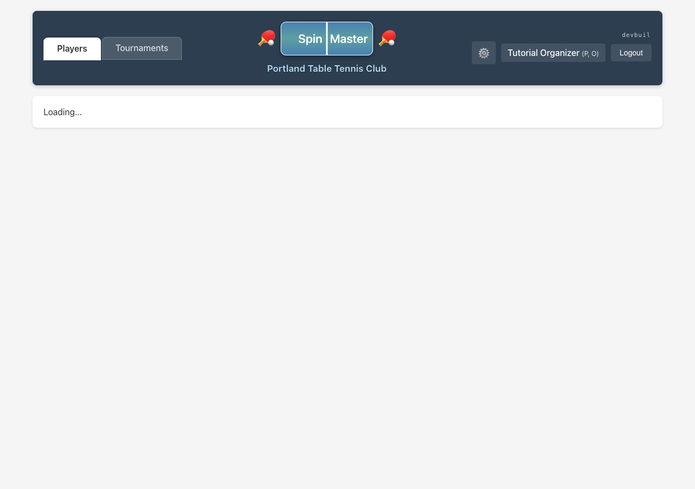
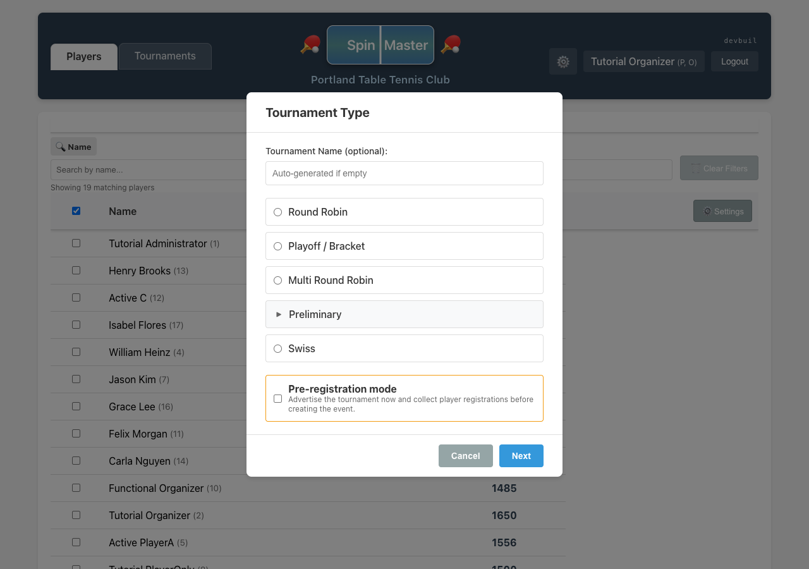

1. Sign in

2. Players toolbar with tournament creation
Organizers see + Tournament next to + Match. + Player remains an Administrator control.

3. Opening the tournament wizard
+ Tournament opens the Tournament Type modal on the Players page. From there you either start an immediate event or create a pre-registration listing.

4. Tournament type modal — what you configure here
Single screen: name, format, optional pre-registration
- Tournament name (optional). Leave blank to let the app auto-generate a name later in the flow.
- Format. Pick one radio option. The menu includes nested items under Preliminary (expand the row to see Round Robin Final and Playoff Final). Additional registered plugins can appear at the bottom of the list.
- Pre-registration mode (checkbox). When checked, the primary action becomes Create Pre-registration instead of Next. You must fill the yellow-highlighted panel: Tournament Date, Registration Deadline (cannot be after the tournament date; often defaults to shortly before), optional Minimum / Maximum Rating, and optional Max Participants.
- Footer actions. Cancel closes the modal. Next (immediate mode) moves to Players selection. Create Pre-registration posts the listing and returns you to the flow appropriate for organizers (typically the Tournaments view).
Default date/time offsets for pre-registration can be tuned under System settings (administrators) via the preregistration section.
5. Supported formats and minimum roster sizes
The creation wizard enforces per-format limits when you select players. Upper caps and extra rules (groups, seeds, Swiss rounds) appear in the Configuration step for that plugin.
| Format (menu label) | When to use it | Typical minimum players |
|---|---|---|
| Round Robin | Everyone in one group plays everyone else once; standings from results. | 3 |
| Playoff / Bracket | Seeded elimination bracket; preview before commit. | 6 |
| Multi Round Robin | Split the field into several smaller round-robin groups (snake-style assignment). | 6 |
| Preliminary → Round Robin Final | Qualifying round-robin groups, then a final round-robin for qualifiers (and optional auto-qualified players). | 8 |
| Preliminary → Playoff Final | Qualifying round-robin groups, then a knockout final bracket. | 8 |
| Swiss | Multiple rounds of pairings without full round-robin; round count and pairings are configured in the wizard. | 6 |
6. Scenario A — Create a tournament immediately (overview)
End-to-end path (Players → Tournaments)
- On Players, click + Tournament.
- In the modal, optionally set the name, choose the format, leave Pre-registration mode unchecked, then click Next.
- Complete Players selection (see §7), then the format-specific Configuration wizard (§8–12 for the formats covered here; Round Robin follows the same staging pattern with its own fields).
- Confirm and create. On success you are taken to Tournaments to run matches, print schedules, complete the event, etc.
Cancel / back navigation
While still on the Players wizard, cancel or step back according to the on-screen controls. If you arrived from Modify or Repeat (below), cancelling returns you to Tournaments instead of dropping only the inner step.
7. Selecting players (shared across formats)
After Next from the type modal, the blue-bordered summary bar shows the chosen type, the Players selection stage, and a chip list of selected members (rating on each chip).
- Only active members who carry the PLAYER role appear for selection, regardless of other filters you normally use on the roster.
- Filters expand automatically so you can narrow by name, rating band, age, etc., while you build the roster.
- Use each row’s selection control to add or remove players. Toolbar actions typically include Select All and Deselect All for the visible list.
- Shift+click on the player column uses a range anchor: the second click adds or removes every eligible row between the anchor and the current row (same mechanic as statistics selection).
- The footer shows how many players are selected versus the format minimum; you cannot continue until the count is valid.
- When satisfied, continue into Configuration — the label in the progress indicator — where the plugin-specific steps below begin.
8. Playoff / Bracket — configuration
- Organize bracket. The server builds a bracket preview from your selected
participantIdsand a seed count derived from system rules. The BracketPreview surface lets you drag players between slots, move someone temporarily to the “temp” zone while reshuffling, and reseed with a different number of seeds. - Validation before Continue: you cannot proceed while a drag is unfinished or while a player sits in the temporary drop zone — finish the drag or clear the zone first.
- First round matches. The next step lists the opening pairings implied by your bracket ordering so you can sanity-check names and byes before submit.
- Submit runs
POST /api/tournamentswithtype: PLAYOFF, optional explicitbracketPositionsarray, and the resolved name (your modal name or an auto-generated Playoff <date> string).
Minimum roster size for playoffs is enforced both when leaving player selection and again inside the wizard (see the formats table — typically 6 players).
9. Multi Round Robin — configuration
Step 1 — Players per group
Choose an integer Players per group within the allowed band (defaults lean toward groups of at least four; upper bound in the UI is 12). The summary explains how many parallel groups will be created and notes when the last group is smaller because the division is uneven.
Initial group assignment uses rating order: strongest players are packed into Group 1, then Group 2, and so on (not a snake across groups at this stage — that pattern appears in preliminary flows).
Step 2 — Confirm groups
You review each round-robin pod. Drag-and-drop players between groups if you need to rebalance manually. Every group must keep at least two players before you can create.
Submit payload
Creation sends type: MULTI_ROUND_ROBINS with additionalData.groups as an array of member-id arrays — one child round robin per group.
10. Preliminary + Final Round Robin — configuration
Tournament configuration step
- Auto-qualified players — count of top-rated entrants who skip the preliminary stage and go straight to the final round-robin pod.
- Players per preliminary group — target size within the system min/max; the copy explains that the last group may be one player short if the division is uneven.
- Final Round Robin size — how many players will contest the championship round robin. The UI enforces a minimum of
auto-qualified + number of preliminary groups(every group sends at least its winner forward). You may increase the size to admit extra slots for second- or third-place finishers; the summary highlights how many “extra” slots that implies.
Confirm groups
Preliminary pods are generated with a snake draft across groups (balances strength). Review the matrix, drag players between preliminary groups if corrections are needed, then continue through the confirmation step.
Submit payload
type: PRELIMINARY_WITH_FINAL_ROUND_ROBIN with additionalData carrying groups, finalRoundRobinSize, autoQualifiedCount, and the resolved autoQualifiedMemberIds list.
11. Preliminary + Final Playoff — configuration
Tournament configuration step
- Same auto-qualified and preliminary group size controls as the Round Robin final variant.
- Final playoff bracket size — must be a power of two strictly between the theoretical minimum (
auto-qualified + preliminary groups) and the total player count. The UI lists only valid sizes and auto-selects the smallest feasible bracket when inputs change. - An extra spots readout explains how many wildcard slots exist beyond the auto-qualified players plus one qualifier per preliminary group.
Confirm groups & submit
Snake-generated preliminary groups are editable via drag-and-drop, identical in spirit to the Round Robin final workflow. Submit uses type: PRELIMINARY_WITH_FINAL_PLAYOFF with additionalData.playoffBracketSize plus the group matrices and auto-qualified ids.
12. Swiss — configuration
- After player selection, choose how many rounds the Swiss event will run (within the system min/max).
- Review the roster and round count, then create. The app builds pairings round by round as results come in.
- Submit uses
type: SWISSwith the selected participants and round configuration inadditionalData.
Swiss supports Early Completion only after at least one round has started. Playoff brackets never early-complete.
13. Scenario B — Pre-registration, finalize, cancel
B1 — Open registration before the event exists
- Click + Tournament, choose the eventual format and optional name.
- Enable Pre-registration mode, set date, deadline, and optional rating / capacity gates.
- Click Create Pre-registration. Players can register or decline from the tournament card on Tournaments; pending items can surface a count in the header tab.
B2 — Turn registrations into a real bracket or schedule
- On Tournaments, open the preregistration event.
- Click Finalize when you are ready. The app collects members whose registration status is REGISTERED and navigates to Players with the creation wizard pre-loaded: same type, name, and that participant list.
- Adjust the roster if needed, then complete the normal Configuration step and create the live tournament structure.
B3 — Cancel a pre-registration
Organizers can cancel an advertised pre-registration from the Tournaments UI (with reason / presets where implemented). The listing is removed from active views after success.
14. Scenario C — Modify an existing tournament
On Tournaments, eligible events show ✏️ Modify for organizers while the structure is still changeable (for example, compound tournaments hide modify once results exist on child events).
- Click ✏️ Modify. The app saves UI state, navigates to Players, and opens the wizard in modification mode with the tournament id, type, name, and current participant ids prefilled.
- Change the player selection and/or format-specific settings as allowed, then save. Cancelling sends you back to Tournaments without applying changes.
15. Scenario D — Repeat a past setup
Completed or reference tournaments expose 🔄 Repeat for organizers. That starts a new creation on Players with the same type, name, and participant list copied forward so you can tweak the roster or title before running the configuration step again.
Repeat is intended for recurring club nights; it does not delete or alter the original tournament record.
16. Scenario E — Day-of: scores, schedule, print
- Open the active tournament from Tournaments (detail view).
- Expand a basic event (or a child group under a compound parent) to see the active panel — round-robin matrix, Swiss round, or playoff bracket.
- Enter set scores (or a forfeit). Password / score-PIN rules follow club kiosk settings when enabled.
- Use Show Schedule / print controls to print pairings. Compound parents can print schedules for all child groups when available.
- When every competitive match is decided, the tournament moves to COMPLETED automatically (or you use Early Completion / Abandon to stop early).
Results that were never played but filled by Early Completion show as NP (not played). NP does not award wins, losses, or rating changes.
17. Scenario F — Abandon a tournament
When to use Abandon
Stop an active event without treating unfinished matches as real results. Abandon is always available to organizers on active basic tournaments and on compound parents / children (via the red × stop control).
How to abandon
- On the tournament detail page, click the red × (stop) control in the header (or on a child group for compound events).
- In the Stop Tournament dialog, choose Abandon (first row).
- If any competitive matches were already played, confirm with your account password.
What happens
- No competitive matches played — the tournament is deleted (removed from the list). Under a compound parent, that child disappears from the parent’s children.
- Some matches already played — the tournament is kept as COMPLETED with a cancelled / abandoned flag. Played results stay; unfinished matches are not filled as NP.
- Abandoned events can be filtered on the Tournaments list with the Cancelled filter control.
Abandon is not the same as Early Completion. Abandon marks the event cancelled; Early Completion finishes the event as a normal completion with NP for remaining matches.
18. Scenario G — Early Completion
When to use Early Completion
End a basic tournament early while still counting it as completed (not cancelled). Remaining unplayed matches are filled as 0:0 with NP (not played).
Who supports it
| Format | Early Completion | Gate |
|---|---|---|
| Round Robin (standalone or child group) | Yes | Played competitive matches must reach at least the configured min played % (system default, overridable in the dialog). |
| Swiss | Yes | Allowed after a round has started; fills the current round with NP and does not generate further rounds. |
| Playoff / Bracket | No | Early Completion is hidden; use Abandon if you must stop. |
| Compound parent (Multi RR, Preliminary, …) | No on the parent | Early-complete each basic child that supports it, or Abandon the parent / children. |
How to early-complete
- Open the stop dialog (red ×) on an eligible basic tournament.
- If the Early Completion row is enabled, optionally adjust Min played % for Round Robin, then enter your password and confirm Early Completion.
- If the gate is not met, the Early Completion control stays disabled and shows the reason (for example, not enough matches played).
Effects
- Tournament status → COMPLETED (not cancelled).
- Unplayed matches → NP; no W/L points or rating from those rows.
- Under a compound parent, the child completion notifies the parent (may build a final stage or complete the parent when all children are done).
Administrators set the club default Early Complete Min % under System settings → tournament rules (Round Robin). Organizers can override that value in the stop dialog for a single early-complete action.
19. Scenario H — Stopping compound tournaments
Stop one group (child)
- On the parent detail page, each ACTIVE child group has its own red × control.
- Abandon or Early Complete that child with the same rules as a standalone basic event.
- After a child stop, you stay on the parent page if the parent is still active. An unstarted abandoned child is deleted and removed from the list; an abandoned child with results shows as ABANDONED.
Stop the whole compound (parent)
- Use the parent’s red × and choose Abandon.
- Finished children that already completed normally stay completed. Unfinished children are abandoned or deleted (if nothing was played). The parent is marked abandoned.
- This is the explicit way to end a compound event even when some groups already finished — the app does not auto-abandon the parent just because a final would be small.
Inheritance
- If every child is abandoned (or deleted as unstarted), the parent becomes abandoned when the cascade finishes.
- Preliminary formats skip abandoned groups when building a final and may shrink the final field to who remains eligible.
- Multi Round Robin completes the parent when all children are done; the parent is cancelled only if every child was abandoned.
20. Scenario I — Score correction
After results exist, organizers can enable score correction mode on the tournament detail page (active and/or completed sections, where the toggle appears).
- Turn on correction mode for the section you need.
- Click a correctable score cell (pencil / outline) to reopen the match editor.
- Save the corrected score, or clear the result if the flow allows. Correcting an NP early-complete row clears the not-played flag when a real score is entered.
Correction eligibility depends on tournament status and type (for example, cancelled tournaments block correction). Follow on-screen banners when a match cannot be changed.
21. Permissions at a glance
Tournament APIs require ORGANIZER. Accounts that only have ADMIN do not get organizer controls until ORGANIZER is assigned as well.